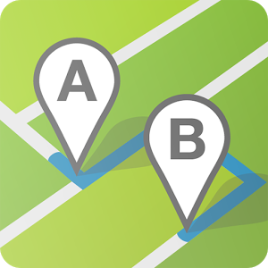

<ion-view title="Top Routes" hide-back-button="true" id="page7" style="background: linear-gradient(mediumpurple,#7253C3)">


    <ion-content padding="true" class="has-header">
        <ion-list ng-init="getRouteData()">
            <ion-item class="item item-thumbnail-left" ng-repeat="x in myData" ng-click="getRouteInfo(x)">
                

                <b> Subject</b> <p>&nbsp;</p> Username  <p>&nbsp;</p> Distance: <input type="text" placeholder={{x.distance}} ng-model="data.distance"><p>&nbsp;</p>  Avarage rating:  <p>&nbsp;</p>  *DropDownIcon <p>&nbsp;</p> Count(#comments in commentsattribute) <p>&nbsp;</p>
         
            </ion-item>
        </ion-list>
    </ion-content>
</ion-view>